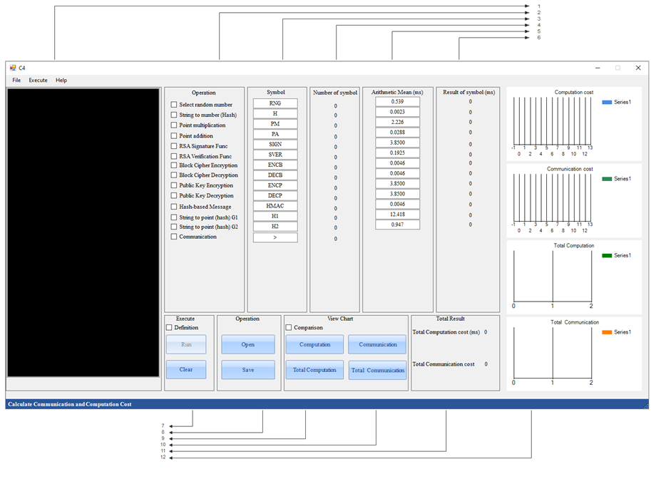
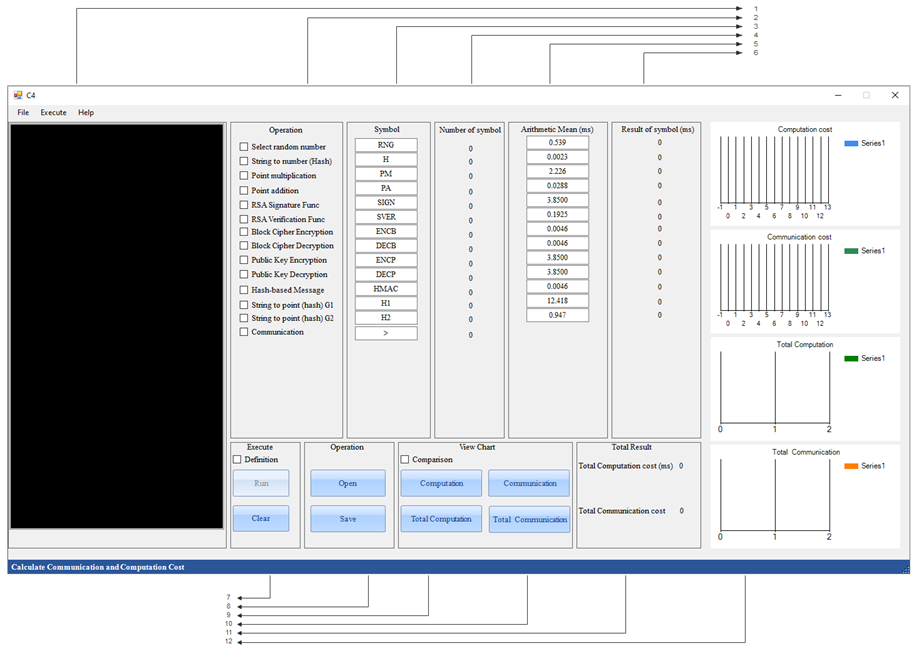

Yashar Salami
Security Researcher
Security Researcher
I was born in Tabriz, and my passion for computers blossomed during my time at Abrishami High School in Osku, setting the stage for my academic journey in technology. This initial spark led me to pursue a degree in software engineering at the Technical and Vocational College of Tabriz, eventually earning a bachelor's degree from Daneshvaran University. I furthered my studies in computer engineering, specializing in networking during my master's program at Azad University of Tabriz. As a trailblazer in the doctoral program at Azad University of Qazvin, I proudly became the institution's first graduate specializing in networking and received my dissertation with a perfect score.
Alongside my academic pursuits, I have actively contributed to the field with numerous publications in prestigious journals such as Nature, Springer, IEEE, John Wiley and Hindawi. I have amassed over 80 citations and achieved a notable h-index of 7 and an i10-index of 3. Notably, I had the opportunity to publish an article in the 5th most cited journal in the world. Additionally, I have the honor of being the first student to have their doctoral thesis published in the esteemed journal Nature, marking a globally recognized achievement. My influence extends to the design and development of the E3c software, a cornerstone of my academic endeavors.
Furthermore, I am deeply engaged with the educational community, serving on editorial boards and as a referee for respected journals, including the I-manager's Journal on Digital Forensics & Cyber Security (JDF) since 2022. I have completed over 45 peer reviews for ISI journals. My educational and research experiences, coupled with my unwavering dedication to expanding my knowledge and understanding, have driven me to seek a role in the academic and research community. I firmly believe that I can make a substantial contribution to enhancing the social fabric of this vibrant and comprehensive academic environment as an effective collaborator and active member of the academic faculty.
Research focuses on:
Book
Translation:
• D'Agostino, G., 2019. Data Security in Cloud Computing, Volume I. Momentum Pres (Persian)
Writing:
• Contributing to the "Practical Cryptography for Developers"
Journal
Yashar Salami, Vahid Khajehvand, Esmaeil Zeinali: A new secure offloading approach for internet of vehicles in fog-cloud federation. Nature Scientific Reports. (2024)
Yashar Salami, Vahid Khajehvand, Esmaeil Zeinali: SOS-FCI: a secure offloading scheme in fog–cloud-based IoT. The Journal of Supercomputing. (2024)
Yashar Salami, Vahid Khajehvand, Esmaeil Zeinali: Cryptographic Algorithms: A Review of the Literature, Weaknesses and Open Challenges. Journal of Computer and Robotics (JCR). (2023)
Yashar Salami, Vahid Khajehvand, Esmaeil Zeinali: SAIFC: A Secure Authentication Scheme for IOV Based on Fog-Cloud Federation. Security and Communication Networks. (2023)
Yashar Salami, Fahimeh Taherkhani, Yaser Ebazadeh, Morteza Nemati, Vahid Khajehvand, Esmaeil Zeinali: Blockchain-Based Internet of Vehicles in Green Smart City: Applications and Challenges and Solutions. Anthropogenic Pollution Journal. (2023)
Yashar Salami, Vahid Khajehvand, Esmaeil Zeinali: Efficiency Simultaneous key Exchange-Cryptography Extraction from Public key in Fog-Cloud Federation-based Secure Offloading for Automatic Weather Stations Observing Systems. Journal of the Nivar (2023)
Yashar Salami, Seyed Reza Hosseine: BSAMS: Blockchain-Based Secure Authentication Scheme in Meteorological Systems. Journal of the Nivar (2023)
Yashar Salami, Vahid Khajehvand, Esmaeil Zeinali: E3C: A Tool for Evaluating Communication and Computation Costs in Authentication and Key Exchange Protocol. Iran Journal of Computer Science (2024)
Yashar Salami, Vahid Khajehvand: LSKE: Lightweight Secure Key Exchange Scheme in Fog Federation. Complexity. (2021)
Yashar Salami, Yaser Ebazadeh, Vahid Khajehvand: CE-SKE: cost-effective secure key exchange scheme in Fog Federation. Iran Journal of Computer Science. (2021)
Yashar Salami, Vahid Khajehvand: SMAK-IOV: Secure Mutual Authentication Scheme and Key Exchange Protocol in Fog Based IoV. Journal of Computer and Robotics (JCR). (2020)
Conference
Yashar Salami & Vahid Khajehvand & Esmaeil Zeinali: LSMAK-IOV: Lightweight Secure Mutual AKE Scheme in Fog-Based IoV. 2024 10th International Conference on Artificial Intelligence and Robotics (QICAR) IEEE.
Yashar Salami & Vahid Khajehvand: Security Analysis of the Otway-Rees Protocol to the Brute Force Attack. The 1st International Conference on Data Analysis: New Trends Logistics and Supply Chain. 14th November 2019 – Iran Qazvin.
Taghi Heidarzad & Yashar Salami & Ali Ghaffari & Vahid Khajehvand: Detecting SIDDOS Attacks under the ANFIS Based Logic. The 1st International Conference on Data Analysis: New Trends Logistics and Supply Chain. 14th November 2019 – Iran Qazvin.
Yashar Salami & Ali Asghar Pourhaji Kazem: A Survey of Cryptographic Algorithms. 1st National Conference on Computer Engineering, Information Technology, and Application of Artificial Intelligence.
Yashar Salami & Ali Asghar Pourhaji Kazem: A Survey of Quantum Key Distribution Protocols. 3rd International Conference on Applied Researches in Science & Engineering. 19th December 2018 - Istanbul, Turkey. Marmara University.
Yashar Salami & Vahid Khajehvand & Esmaeil Zeinali: SMAKE-UAV: A Secure Mutual AKE Scheme in Fog Based Unmanned Aerial Vehicles. 2024 10th International Conference on Artificial Intelligence and Robotics (QICAR) IEEE.
Yashar Salami & Ali Asghar Pourhaji Kazem: A Review of Key Exchange Protocols. 4th National Conference on Distributed Computing and Big Data Processing.
Yashar Salami: A Break in El-Gamal Encryption Using the Pohlig–Hellman Algorithm. The 4th National Conference on Applied Research in Electrical, Mechanical, Computer and IT Engineering.
Teaching Assistant, Daneshvaran University. (2015)
• Java programming.
• TCP/IP
Visiting professor Daneshvaran University, September 2018 to 2022.
• Computer network
• TCP/IP
• Cloud Computing
• Network security
• Research method
• Wireless networks
• Network management
• Cloud computing
Visiting professor Safhegostaralborz, Technical, and Vocational, January 2020 to 2022.
• Network +
• Lpic 1 Linux
• Lpic 2 Linux
• Certified Ethical Hacker (CEH)
• Penetration Testing with Kali (PWK)
Visiting professor Setaregandanesh, Technical, and Vocational, January 2021 to 2022.
• Network +
• Lpic 1 Linux
• Lpic 2 Linux
• Certified Ethical Hacker (CEH)
• Penetration Testing with Kali (PWK)
Visiting professor Islamic Azad University, September 2023 to Present.
• Computer network
• TCP/IP
• Network security
• Introduction Programing
• Advance programing
• Object oriented methods
• Programing System
Visiting professor Technical and Vocational University, September 2023 to Present.
• Computer network
• TCP/IP
• Network security
• Advance programing
• Object oriented methods
• Operation System
Main Objective: The E3C project aims to analyze and evaluate the communication and computation costs associated with security protocols like authentication and key exchange. These costs include computation time and the amount of data exchanged between parties.
E3C Tool: The project introduces the E3C tool, designed to help researchers and engineers assess and compare the efficiency of different protocols regarding their communication and computation costs. This tool aids in improving protocols and finding more optimized solutions in the field of cybersecurity.
Application: The tool can be used in the design and implementation of new security protocols, evaluation of existing protocols, and selection of the best methods for use in various systems.

 

Email: Yashar.Salami@gmail.com
Email: Y.Salami@Qiau.ac.ir